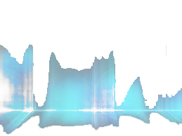

תמיד חלמתם לפתוח תחנת רדיו? עכשיו זו ההזדמנות שלכם!
Beat.Live מאפשר לכם לפתוח תחנת רדיו מתקדמת ומקצועים ועדיין פשוט לתפעול תוך דקות ולשתף את המוזיקה שאתם אוהבים עם כל העולם!
איך זה עובד?
לאחר הליך הרשמה קצר ופשוט תוכלו להתחבר לממשק הניהול הפשוט שלנו ולעדכן את הפרטים אודות התחנה, את החדשות וכמובן - להעלות שירים!
אתם לא צריכים לדאוג לפרטים הטכניים - אנחנו נדאג להם בשבילכם!
הטכנולוגיה
מאחורי השירות המתקדם שאנחנו מציעים עומדת טכנולוגיה שקרויה בשפה המקצועית "טייס אוטומטי" או בשפת העם - בוט שידור.
בזכות טכנולוגיה זו הנמצאת כבררת מחדל בתחנות רדיו מקצועיות השירים שהעלאתם מתנגנים כל הזמן ברצף - כך שאתם לא צריכים לדאוג לעלות לשידור בזמן - אלא רק באילו שירים אתם מעוניינים לשתף את קהל המאזינים שלכם!
והמחיר?
בעוד אתרים אחרים המציעים שירותים דומים מציעים אותם בלפחות 150 ש"ח בחודש ועוד תוספת לבוט שידור - אנחנו מציעים את השירות בחינם כולל את הבוט!
הירשמו עכשיו! זו ההזדמנות שלכם!